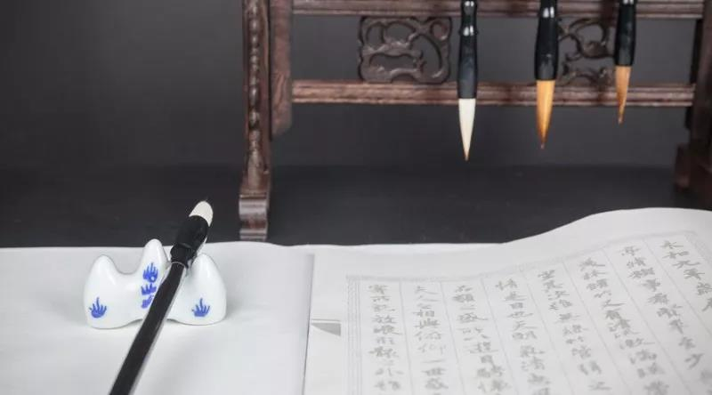

学院动态
-
高级工商管理研修班180期即将开学
彼得德鲁克说：“一个企业只能在企业家的思维空间里成长,一个企业的成长被其经营者所能达到的思维空间所限制!”学习是打开思维空间即企业成长最快速的方式！
国学《中华传统文化与核心价值观》&《近代国学观念的发生与演变》

中华文明是世界文明史上唯一的连续性文明，五千年的连续发展是中华文明的重要特征。轴心时代中华文明形成的基本价值成为主导中华文明后来发展的核心价值。经过轴心时代以后两千年的发展，中华文明确定地形成了自己的价值偏好，举其大者有四：责任先于自由，义务先于权利，社群高于个人，和谐高于冲突。这些价值原理已经为前现代东亚世界广为接受。
宋明已经儒家落，民国之后大师鲜？
克己复礼明明德，齐家治国平天下……
闻名东方，君子既来！
2018年7月21日紫荆国学经典学堂18期开班论坛特邀新中国第一位哲学博士，清华大学国学院院长陈来教授为广大学员带来精品论坛——《中华传统文化与核心价值观》《近代国学观念的发生与演变》，听陈教授娓娓讲述中华文明的核心价值，探寻未来建立全球关联社群，合作政治、和谐世界的意义，构建属于我们的精神家园。
主讲老师：陈来
●1952年出生于北京，祖籍浙江温州。1976年中南矿冶学院（现中南大学）地质系毕业。
●1981年北京大学哲学系研究生毕业，获哲学硕士学位，同年留系任教。
●1985年北京大学哲学系博士研究生毕业，获哲学博士学位。
●2012年6月被聘任为中央文史研究馆馆员 。
●著名哲学家，新中国第一位哲学博士，师从张岱年先生、冯友兰先生。现任清华大学国学研究院院长，清华大学哲学系教授、博士生导师、校学术委员会副主任。
●学术领域为中国哲学史，主要研究方向为儒家哲学、宋元明清理学、现代儒家哲学，其研究成果代表了目前本领域的领先水平。
陈来现任清华大学国学研究院院长，他是1929年清华国学院停办以后，于2009年复建的清华国学院首任院长。八十年间， 国学饱经风霜， 面对梁启超、王国维、陈寅恪、赵元任所留下的思想遗产，今天的清华国学院将如何继承与发展？对此，陈来表示：“中国主体、世界眼光”这八个字就是清华国学院的发展方针。也就是说，既要理直气壮地突出自己对民族文化的理解和研究方法，也要吸收西方一流的人文学、哲学、社会学所有的营养，不仅与世界合流，还要成为主流，这是我们对新时代中国国学研究应当有的志向和宗旨。
课程大纲
主题一：中华传统文化与核心价值观
●传统文化的基本价值观
●传统价值观的特色
●传统价值观的转型发展
●传统美德的现代传承和转化
●传统美德的传承转化
●个人道德的重要性
主题二：近代国学观念的发生与演变
●三个方面：救亡意识主导下的、政治取向的国学观念；启蒙思潮主导下的、文化取向的国学意识；以世界汉学为参照的、学术研究的国学观念。
●三种用法：第一种指遭遇西方文化冲击之前中国原有的思想文化与学术体系；第二种为扩大的用法，即以国学为中国传统文化的简称；第三种是以“国学”指近代以来以传统文化为对象的学术研究的体系，即国学研究。
●三个阶段：第一阶段的特点是在学问方法上延续清代的考据学、训诂学，而在观念上导入近代文化意识；第二阶段的特色是呼应新文化运动、强调科学方法和疑古思潮；第三阶段是汉学化的国学，即与世界汉学、世界学术接轨、合流的新的国学研究。
参与对象：
希望提升人文素养、哲学素养、思想境界的领导者;
清华学员（优先报名）、企业家、CEO等企业家。
活动时间及地点：
课程主题：《中华传统文化与核心价值观》《近代国学观念的发生与演变》
课程时间：2018年7月21日（周六）
课程地点：深圳清华大学研究院
报名咨询：
请在右侧留言或致电400-115-1005（12小时*7天）报名
获取本周课程表请电话咨询400-115-1005（12小时*7天）
温馨提示：
1、为了便于您更全面的了解课程，有意向报读的话可以申请免费试听半天正式课程（推荐上午）。若申请下午继续试听，需填写报名表及缴纳报名费5000元。
2、请遵守课堂纪律，因您是试听学员，所以不主动邀请您参与发言和讨论，谢谢配合。若有相关疑问，可在课程所预留的互动时间或课间与老师或同学交流。请自带记录所用笔与笔记本；请上课时将手机调至震动或静音，并在教室外通话。
国学经典学堂

国学经典学堂汇聚国学一流专家学者，综览古今经典思想智慧，解读历史兴替得失。
旨在帮助创业者、企业家研习并践行国学。在复杂的企业经营环境中，学会规避风险、把握商机、赢得优势、参透事物本质。探索修身、治企有效路径。
你走得有多远，取决与谁同行。
加入国学班，与卓越者同行！